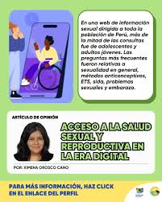

Navegando la salud sexual en la era digital en el mundo digital
La salud sexual en la era digital abarca cómo la tecnología influye y se relaciona con la sexualidad humana, incluyendo el acceso a información, la comunicación, la exploración y la expresión de la sexualidad, así como los riesgos y beneficios asociados. La era digital ha transformado la forma en que las personas acceden a información sobre salud sexual, se relacionan y experimentan su sexualidad. es un derecho humano, que incluye la libertad de decidir sobre la propia sexualidad, sin discriminación ni violencia. Además, está íntimamente ligada a la salud reproductiva, ya que la prevención de enfermedades de transmisión sexual y la planificación familiar son aspectos importantes de la salud sexual y reproductiva Los factores que puede afectar la salud sexual incluyen: Temor a un embarazo no deseado,Preocupaciones sobre la infertilidad,Infecciones de transmisión sexual (ITS), Enfermedades crónicas como cáncer o enfermedades del corazón, Medicamentos que afectan el deseo sexual o el rendimiento.
Tambien consiste en el en el bienestar y no meramente en la ausencia de enfermedad,la salud sexual implica el respeto,la seguridad y la libertad frente ala discriminacion y la violencia En Argentina, existen políticas y programas para promover la salud sexual y reproductiva, incluyendo el acceso a métodos anticonceptivos gratuitos y la atención a la diversidad sexual. Se puede encontrar más información y asesoramiento en la Línea 0800 Salud Sexual o a través de los servicios de salud locales

DESVENTAJAS DE LA SALUD SEXUAL EN LA ERA DIGITAL
DESINFORMACION: La difunsion de informacion erronea o desactualizada sobre educacion sexual y salud reproductiva a traves de internetpuede ser perjudical
BRECHA DIGITAL: la desigualdad en el acceso a la tecnologia puede limitar la capacidad de algunas comunidades para beneficiarse de los recursos de educacion sexual en linea
RIESGO PARA LA PRIVACIDAD: La recoleccion y gestion de datos personales relacionado ala salud reproductiva y sexual pueden generar preocupaciones etica
LA ANSIEDAD Y EL ESTRES: la presion social y la exposicion a contenido sexualizado en linea pueden generar ansiedad y estres relacionados con la salud sexual
VENTAJAS DE LA SALUD SEXUAL DE LA ERA DIGITAL
ACCESO A INFORMACION CONFIABLE: Las plataformas digitales brindan acceso a información sobre salud sexual y reproductiva, anticoncepción y prevención de ITS, permitiendo a las personas empoderarse con conocimiento
¿COMO SE DEBE TENER UNA BUENA SALUD SEXUAL? No realizar conductas de riesgo a la hora de practicar sexo. Normalizar el uso de preservativos para evitar posibles enfermedades de transmisión sexual o embarazos no deseados.
EDUCACION SEXUAL: Las redes sociales son un canal poderoso para promover campañas de salud sexual, a menudo coparticipadas por y para jóvenes, aumentando la confianza y la conexión con la información.
NUEVAS FORMAS DE INTERACCION: Se abren nuevas vías para la exploración comunicación y expresión de la sexualidad, ofreciendo herramientas para el autoconocimiento y la conexión

Volver a la pagina prncipal